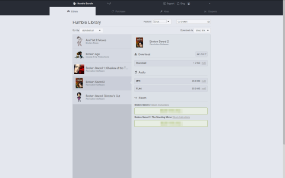

Humble Bundle
|  |
| Humble Bundle Home |
Das Humble Bundle  besteht aus einem Paket von Spielen, welche für einen vom Käufer festgelegten Preis gekauft werden können. Käufer, die mehr als den Durchschnittspreis bezahlen, kommen mitunter in den Genuss von zusätzlichen Inhalten (z.B. Freischaltung eines vorherigen Bundles oder eines zusätzlichen Spiels bzw. Soundtracks). Abhängig vom Bundle erhält der Käufer ebenfalls einen Schlüssel für Desura oder Steam um die erworbenen Spiele dort - sofern verfügbar - ebenfalls verwenden zu können. Spiele können von der in der Email angegebenen Seite heruntergeladen werden. Im Oktober 2017 wurde Humble Bundle von Imagine Games Network
besteht aus einem Paket von Spielen, welche für einen vom Käufer festgelegten Preis gekauft werden können. Käufer, die mehr als den Durchschnittspreis bezahlen, kommen mitunter in den Genuss von zusätzlichen Inhalten (z.B. Freischaltung eines vorherigen Bundles oder eines zusätzlichen Spiels bzw. Soundtracks). Abhängig vom Bundle erhält der Käufer ebenfalls einen Schlüssel für Desura oder Steam um die erworbenen Spiele dort - sofern verfügbar - ebenfalls verwenden zu können. Spiele können von der in der Email angegebenen Seite heruntergeladen werden. Im Oktober 2017 wurde Humble Bundle von Imagine Games Network  übernommen .
übernommen .
Zusätzlich besteht - nach einer Registrerung über die Schaltfläche "Log in / Sign up" die Möglichkeit auf Humble Bundle Home  alle über Humble Bundle erworbenen Spiele, Bundles und (un)genutzte Keys zusammengefasst zu ersehen.
alle über Humble Bundle erworbenen Spiele, Bundles und (un)genutzte Keys zusammengefasst zu ersehen.
Es wird aus Sicherheitsgründen empfohlen unter Settings die Two-Step Verification zu aktivieren. Über Programme, wie z.B. Authy, kann man sich den derzeit gültigen Code anzeigen lassen. Alternativ besteht die Möglichkeit einen Code per SMS zugestellt zu bekommen.

Seiten in der Kategorie „Humble Bundle“:
Seiten mit Tag „Humble Bundle“¶
- Archiv/Spiele/Lugaru HD
- Desura
- Software-Center
- Spiele/Amnesia - The Dark Descent
- Spiele/And Yet It Moves
- Spiele/Anomaly 2
- Spiele/Anomaly Warzone Earth
- Spiele/Aquaria
- Spiele/Atom Zombie Smasher
- Spiele/Avadon - The Black Fortress
- Spiele/Baphomets Fluch
- Spiele/Bastion
- Spiele/BIT.TRIP BEAT
- Spiele/BIT.TRIP RUNNER
- Spiele/Blocks That Matter
- Spiele/Braid
- Spiele/Cave Story+
- Spiele/Chocolate Castle
- Spiele/Cogs
- Spiele/Cortex Command
- Spiele/Crayon Physics Deluxe
- Spiele/Darwinia
- Spiele/Defcon
- Spiele/Dungeons of Dreadmor
- Spiele/EDGE
- Spiele/Fieldrunners
- Spiele/Frozen Synapse
- Spiele/Gemini Rue
- Spiele/Gish
- Spiele/Gone Home
- Spiele/Gratuitous Space Battles
- Spiele/Hammerfight
- Spiele/Jack Claw
- Spiele/Jamestown
- Spiele/Jasper's Journeys
- Spiele/Limbo
- Spiele/Machinarium
- Spiele/Multiwinia
- Spiele/NightSky HD
- Spiele/Oil Rush
- Spiele/Osmos
- Spiele/Penumbra
- Spiele/Proteus
- Spiele/Psychonauts
- Spiele/Revenge of the Titans
- Spiele/Rochard
- Spiele/Shadowgrounds
- Spiele/Shadowgrounds Survivor
- Spiele/Shank
- Spiele/Shank 2
- Spiele/Shatter
- Spiele/SpaceChem
- Spiele/Spirits
- Spiele/Steel Storm
- Spiele/Super Meat Boy
- Spiele/Swords & Soldiers
- Spiele/The Binding of Isaac
- Spiele/Tiny and Big
- Spiele/To the Moon
- Spiele/Toki Tori
- Spiele/Torchlight 2
- Spiele/TRAUMA
- Spiele/Trine
- Spiele/Uplink
- Spiele/Voxatron
- Spiele/VVVVVV
- Spiele/Waking Mars
- Spiele/Windward
- Spiele/Wizorb
- Spiele/World of Goo
- Spiele/X³ REUNION
- Spiele/Zen Bound 2
- Spiele/Zen Puzzle Garden
- Steam
- Steam Client unter Wine
- SteamCMD
- Trash/Spiele/Dungeons of Dreadmor-1
- Trash/Spiele/Gish-1
- Erstellt mit Inyoka
-
 2004 – 2017 ubuntuusers.de • Einige Rechte vorbehalten
2004 – 2017 ubuntuusers.de • Einige Rechte vorbehalten
Lizenz • Kontakt • Datenschutz • Impressum • Serverstatus -
Serverhousing gespendet von